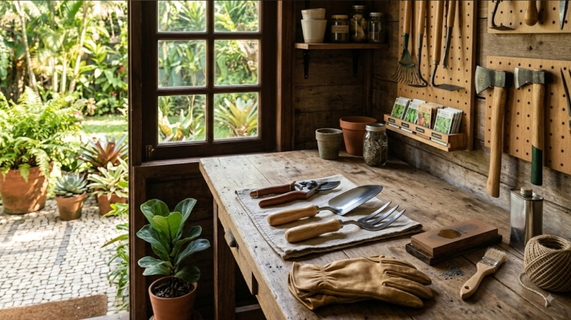

En este artículo
Introducción
La piedra natural es resistente, pero no indestructible: mármol, granito, pizarra, travertino y otras piedras reaccionan de forma diferente a ácidos, humedad, abrasión y productos de limpieza.
Antes de aplicar cualquier recomendación conviene identificar las características concretas del material, la planta o el espacio. Las soluciones más seguras son aquellas que respetan esas diferencias y pueden mantenerse con una rutina realista.
Identificar el tipo de piedra y su acabado
Antes de limpiar, identifica la piedra. El mármol y otras piedras calcáreas pueden reaccionar con sustancias ácidas como vinagre o limón, dejando zonas mates que no son simplemente suciedad. El granito tiene características diferentes, y la pizarra o el travertino requieren cuidados propios. También importa el acabado: una superficie pulida responde de manera distinta a una apomazada, envejecida o texturizada.
Si desconoces el material, revisa documentación de la vivienda, factura del instalador o consulta a un profesional. No hagas pruebas químicas agresivas sobre la superficie. Una identificación correcta evita aplicar recetas genéricas que pueden causar daños permanentes.
Observa además las juntas y el soporte. A veces el problema atribuido a la piedra procede de una junta deteriorada, humedad ascendente o filtración. Limpiar repetidamente no resolverá una causa estructural y puede ocultarla temporalmente.
Además de estos cuidados, conviene trabajar con una lógica preventiva. Esperar a que aparezca un problema grande suele exigir más tiempo, dinero y esfuerzo que realizar pequeñas revisiones. Observa cambios de color, textura, humedad, estabilidad o comportamiento y compáralos con el estado habitual. Esa atención permite actuar con mayor precisión y evita aplicar soluciones innecesarias.
También es útil conservar las instrucciones de productos, muebles, macetas o materiales utilizados. Cuando llega el momento de limpiar, mantener o sustituir una pieza, esa información evita improvisaciones. Si una recomendación del fabricante contradice un consejo genérico, debe prevalecer la indicación específica para ese producto.
Limpieza cotidiana segura
Para el mantenimiento habitual, retira polvo y partículas antes de fregar. Arena y pequeños residuos pueden actuar como abrasivos bajo los zapatos o el paño. Utiliza mopa, aspiración con accesorio apropiado o barrido suave según la superficie.
Emplea un limpiador de pH adecuado y expresamente compatible con piedra natural. Menos producto suele ser mejor que dejar residuos. Trabaja con paños o mopas suaves, aclara cuando las instrucciones lo indiquen y seca las zonas donde el agua pueda dejar marcas.
Evita estropajos metálicos, polvos abrasivos y mezclas caseras ácidas. El hecho de que un producto sea natural no significa que sea seguro para la piedra. En encimeras, sigue además las recomendaciones de higiene apropiadas para superficies donde se preparan alimentos.

La frecuencia de mantenimiento no debería convertirse en una obligación rígida. Una vivienda con niños, mascotas o uso intenso necesita revisiones distintas de una casa utilizada ocasionalmente; del mismo modo, una planta situada en una ventana soleada no se comporta igual que otra de la misma especie en una habitación fresca. Ajustar la rutina a las condiciones reales es parte de un buen cuidado.
Cuando pruebes un cambio, modifica una variable cada vez siempre que sea posible. Así podrás entender mejor qué produjo una mejora o un problema. Cambiar simultáneamente ubicación, riego, producto de limpieza y exposición hace mucho más difícil identificar la causa de la respuesta observada.
Cómo actuar frente a manchas y derrames
Ante un derrame, retira el líquido rápidamente mediante absorción, sin extenderlo. Aceite, vino, café, cosméticos y productos de limpieza pueden penetrar en piedras porosas. El método para tratar una mancha depende tanto de la sustancia como de la piedra, por lo que no conviene aplicar el mismo remedio a todos los casos.
Algunas marcas claras sobre mármol causadas por ácidos son ataques químicos al acabado y no manchas convencionales. En esos casos, insistir con limpiadores no devuelve el brillo y puede empeorar la zona. Un profesional de piedra puede valorar pulido o restauración.
Si decides probar un producto específico, haz primero una prueba en una zona poco visible y respeta tiempo de actuación, ventilación y medidas de seguridad. Nunca mezcles productos químicos de limpieza.
El presupuesto también forma parte del mantenimiento. No siempre el producto más caro es el más adecuado, ni es necesario acumular soluciones especializadas para cada tarea. Prioriza herramientas y productos compatibles con el material o la especie, sigue las dosis indicadas y evita compras impulsivas. Un sistema sencillo que realmente se utiliza suele funcionar mejor que una colección de productos olvidados.
Por último, la seguridad debe estar presente en cualquier tarea. Guarda productos fuera del alcance de niños y animales, ventila cuando corresponda y utiliza protección personal si la etiqueta lo exige. En trabajos que impliquen daños estructurales, electricidad, productos peligrosos o restauraciones delicadas, recurrir a un profesional puede evitar riesgos y daños mayores.
Prevención, sellado y mantenimiento
Los felpudos en entradas reducen la arena que llega a suelos de piedra. Bajo muebles, utiliza protectores que no manchen y mantén las patas limpias. En encimeras, tablas de corte, posavasos y salvamanteles reducen arañazos, calor y derrames.
Algunas piedras se benefician de un sellador impregnador, pero no todas necesitan el mismo producto ni la misma frecuencia. Un sellador no convierte la superficie en inmune a manchas o ácidos. La elección y reaplicación deben seguir las recomendaciones del fabricante, instalador o especialista.

En exteriores, revisa drenaje, juntas y zonas donde el agua se acumula. Los ciclos de humedad, sales y heladas pueden afectar ciertos materiales. Un mantenimiento preventivo adaptado al clima suele ser más eficaz que tratamientos intensivos después del deterioro.
Además de estos cuidados, conviene trabajar con una lógica preventiva. Esperar a que aparezca un problema grande suele exigir más tiempo, dinero y esfuerzo que realizar pequeñas revisiones. Observa cambios de color, textura, humedad, estabilidad o comportamiento y compáralos con el estado habitual. Esa atención permite actuar con mayor precisión y evita aplicar soluciones innecesarias.
También es útil conservar las instrucciones de productos, muebles, macetas o materiales utilizados. Cuando llega el momento de limpiar, mantener o sustituir una pieza, esa información evita improvisaciones. Si una recomendación del fabricante contradice un consejo genérico, debe prevalecer la indicación específica para ese producto.
Rutina de mantenimiento para suelos, encimeras y revestimientos
En suelos, la primera defensa es evitar que partículas abrasivas entren en casa. Coloca felpudos adecuados y límpialos con frecuencia. Aspira o retira el polvo antes de fregar. Si utilizas una mopa húmeda, no dejes charcos y presta especial atención a juntas y encuentros con paredes.
En encimeras, limpia los derrames al momento y evita almacenar permanentemente botellas de aceite, cosméticos o productos químicos directamente sobre la piedra. Una bandeja protege la superficie y facilita detectar fugas. Mantén tablas de corte y salvamanteles al alcance para que proteger la encimera sea un hábito y no una tarea adicional.
En baños, ventila para reducir humedad persistente y limpia restos de jabón con productos compatibles. No intentes eliminar depósitos minerales con ácidos domésticos sin comprobar la piedra. En exteriores, retira hojas húmedas y materia orgánica que permanezca durante mucho tiempo sobre el pavimento.
Una revisión anual por un profesional puede ser útil en superficies extensas o de alto valor. Puede valorar juntas, sellado, pulido y daños que no se resuelven con limpieza. Mantener la piedra no consiste en hacerla parecer nueva a cualquier precio, sino en conservar su integridad y permitir que envejezca de manera uniforme.
Errores que conviene evitar
Uno de los errores más frecuentes es aplicar una solución universal sin comprobar las características del caso concreto. Los materiales, las plantas y los espacios responden de manera distinta según su composición, ubicación, uso y estado. Antes de intervenir, identifica esas variables y empieza por la opción menos agresiva.
Otro error es cambiar demasiadas cosas al mismo tiempo. Si modificas productos, ubicación, frecuencia de mantenimiento y condiciones ambientales en una sola jornada, después será difícil saber qué produjo el resultado. Los cambios graduales facilitan evaluar la respuesta y corregir a tiempo.

También conviene evitar el exceso de mantenimiento. Limpiar, regar, pulir, fertilizar o reorganizar más de lo necesario puede ser tan problemático como descuidar. Una rutina basada en observación permite intervenir cuando existe una necesidad real y mantener el equilibrio a largo plazo.
Cuidados según el lugar donde está instalada la piedra
Una encimera de cocina está expuesta a grasas, alimentos, calor y productos de limpieza. Mantén una rutina rápida después de cocinar y utiliza accesorios protectores. No dejes productos de limpieza abiertos sobre la superficie y revisa especialmente las zonas alrededor del fregadero, donde el agua puede permanecer durante más tiempo.
En el baño, la piedra convive con humedad, jabón y cosméticos. Una buena ventilación reduce el tiempo que las superficies permanecen mojadas. Seca zonas donde el agua se acumula y evita desincrustantes ácidos cuando la piedra no sea compatible. Las juntas también necesitan limpieza y revisión porque pueden deteriorarse independientemente de la piedra.
Los suelos requieren controlar el desgaste mecánico. Arena y pequeñas piedras transportadas por el calzado pueden rayar superficies pulidas. Felpudos, limpieza frecuente y protectores bajo muebles reducen ese efecto. Cuando muevas una pieza pesada, levántala o utiliza un sistema adecuado en lugar de arrastrarla.
En terrazas y patios, hojas húmedas, macetas y muebles pueden dejar marcas si permanecen meses en el mismo lugar. Limpia debajo de ellos de forma periódica y comprueba que el agua tenga salida. En climas fríos, la resistencia de la piedra y de la instalación a ciclos de hielo y deshielo debe haberse considerado desde el proyecto.
Cuándo recurrir a un especialista
Busca ayuda profesional cuando existan grietas que aumentan, piezas sueltas, manchas profundas, pérdida extensa de pulido o señales de humedad procedente del soporte. Un especialista puede diferenciar entre un problema superficial y otro relacionado con la instalación.
La restauración profesional puede incluir pulido, reparación de juntas, limpieza técnica o aplicación de tratamientos específicos. No todos esos procedimientos son adecuados para todas las piedras. Pedir un diagnóstico antes de intervenir ayuda a conservar material original y evita gastar en productos que no resolverán la causa.
Una última recomendación
Conservar una pequeña ficha con el nombre de la piedra, el acabado y los productos compatibles simplifica mucho el mantenimiento futuro. Si la vivienda cambia de propietario o se contrata un servicio de limpieza, esa información también ayuda a evitar tratamientos inadecuados.
Preguntas frecuentes
¿Puedo limpiar mármol con vinagre?
No es recomendable: los ácidos pueden atacar las piedras calcáreas y dejar zonas mates. Utiliza productos específicamente compatibles con piedra natural.
¿Todas las piedras naturales necesitan sellador?
No. Depende de la piedra, su porosidad, acabado y uso. Consulta las recomendaciones del instalador o fabricante.
¿Qué hago si aparece una mancha?
Absorbe el derrame cuanto antes, identifica la sustancia y la piedra y utiliza un tratamiento compatible. Para daños importantes, consulta a un especialista.
Conclusión
Cuidar y personalizar un espacio funciona mejor cuando las decisiones responden a sus condiciones reales. En el caso de cómo cuidar superficies de piedra natural, observar antes de actuar, utilizar métodos compatibles y mantener una rutina sencilla permite obtener resultados más duraderos. No es necesario intervenir constantemente: la constancia, la prevención y los ajustes realizados a tiempo suelen ser más eficaces que las soluciones agresivas o improvisadas.